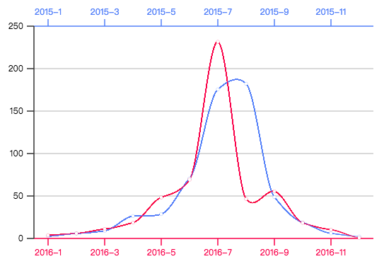

有二组数据，2015年和2016年每个月的降水量，现在需要绘图有二条曲线的图表来方便展示这二年每个月降雨走势，右图是最终效果。
首先，需要提前准备好三个方法：drawerLine、drawerPoint和toImageData，分别用于绘制一段直线、点和把数据变成坐标。你不用也不应该太在意额外定义的这三个方法。
在开始绘制图形前，我们需要先准备好数据和画布等基本元素。这里，选择的是使用Canvas2D绘图。
var data = {
"2015": [2.6, 5.9, 9.0, 26.4, 28.7, 70.7, 175.6, 182.2, 48.7, 18.8, 6.0, 2.3],
"2016": [3.9, 5.9, 11.1, 18.7, 48.3, 69.2, 231.6, 46.6, 55.4, 18.4, 10.3, 0.7]
};
var pencil = $$('<canvas>非常抱歉，您的浏览器不支持canvas!</canvas>')
.appendTo('body')
.attr('width', 600).attr('height', 420)
.painter();
pencil.textAlign = 'right';
$$.loop([
// y坐标，颜色
[60, '#538bf6'], [120, '#cccccc'], [180, '#cccccc'],
[240, '#cccccc'], [300, '#cccccc'], [360, '#e42d58']
], function (item) {
// 画线条
drawerLine(60, item[0], 540, item[0], item[1]);
// 画刻度
drawerLine(60, item[0], 50, item[0], "#333333");
// 添加刻度值
pencil.fillText(250 - (item[0] - 60) / 300 * 250, 45, item[0]);
});
drawerLine(60, 60, 60, 360, "#333333");
pencil.textAlign = 'center';
$$.loop([
[80, '2015-1', '2016-1'], [160, '2015-3', '2016-3'], [240, '2015-5', '2016-5'],
[320, '2015-7', '2016-7'], [400, '2015-9', '2016-9'], [480, '2015-11', '2016-11']
], function (item) {
// 画刻度
drawerLine(item[0], 50, item[0], 60, "#538bf6")
drawerLine(item[0], 360, item[0], 370, "#e42d58");
// 添加刻度值
pencil.fillStyle = "#538bf6";
pencil.fillText(item[1], item[0], 40);
pencil.fillStyle = "#e42d58";
pencil.fillText(item[2], item[0], 385);
});
var line2015 = clay.cardinal().setP(toImageData(data['2015'])),
line2016 = clay.cardinal().setP(toImageData(data['2016']));
$$.animation(function (deep) {
// 绘制曲线
var flag;
// 2015年
pencil.beginPath();
pencil.moveTo(80, line2015(80));
for (flag = 80; flag <= deep * 440 + 80; flag += 0.1)
pencil.lineTo(flag, line2015(flag));
pencil.strokeStyle = "#538bf6";
pencil.stroke();
// 2016年
pencil.beginPath();
pencil.moveTo(80, line2016(80));
for (flag = 80; flag <= deep * 440 + 80; flag += 0.1)
pencil.lineTo(flag, line2016(flag));
pencil.strokeStyle = "#e42d58";
pencil.stroke();
}, 700, function () {
// 绘制点
var flag;
pencil.fillStyle = "#fff";
pencil.lineWidth = 0.5;
for (flag = 80; flag <= 520; flag += 40) {
drawerPoint("#538bf6", flag, line2015(flag));
drawerPoint("#e42d58", flag, line2016(flag));
}
});
绘图过程中核心方法是调用了插值对象clay.cardinal()返回2015年和2016年数据的插值函数，如果不是需要计算二个点之间的间值，直接采用原生ES就可以轻松完成图表的绘制。因此，现在你可以理解了，clay是对原生的一种加强，我们的重点是解决绘图过程中的难点，而不是构造一种新的绘图方式。
不过，需要谨记的是：clay.js依旧构造了一些新的绘图方式，只是这里的例子没有体现，因为这是可选的。
绘图中使用到的一些方法的具体说明请查看对应的API，这里不再说明， 点击这里 可以查看本例子的运行效果。